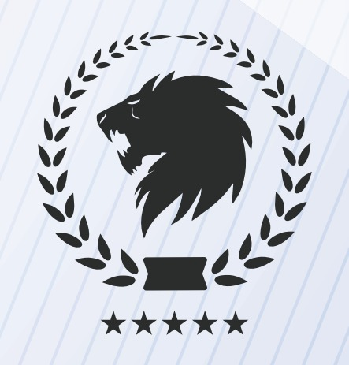
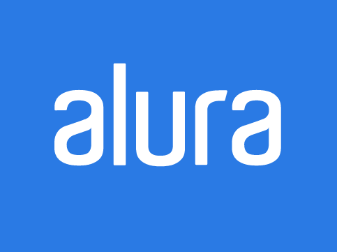

Tenho 26 anos, sou apaixonada por tecnologia desde criança. Apesar da paixão, cursei Ciências Contábeis e obtive experiências ricas com a contabilidade e a controladoria. Aprendi e desenvolvi habilidades como: visão estratégica, planejamento, comunicação, capacidade analítica e relacionamento interpessoal. Assim, cresci como pessoa e profissional.
Participei da equipe de consultoria de uma empresa tecnológica e então percebi que toda a minha bagagem, estava sendo aplicada de uma forma totalmente diferente. Eu lidava com o módulo de controladoria e não estava mais analisando balancetes e demonstrações contábeis, eu instruía pessoas a utilizar um sistema, afim de facilitar essas análises que antes, eu fazia. Essa experiência, despertou aquela velha paixão de infância.
Percebi que ainda existia outra face, onde eu poderia atuar também utilizando minha bagagem contábil. Eu poderia estudar e criar soluções, afim de ajudar outras pessoas e contribuir para a força feminina na tecnologia.
Sendo assim, fiz cursos online, pesquisei, dentre mais de 2 mil meninas inscritas, fui selecinada para participar do workshop online promovido pela reprograma, e este site aqui, foi desenvolvido durante a Imersão CSS da ALura.
Estou apenas començando. Tenho um longo caminho a percorrer, mas quando se sabe o que quer, tudo é possível e sendo possível, vale a pena!
Meus estudos
Lógica de Programação
Senai SP
Curso realizado em Abr/2020. Focado na introdução à lógica de programação.
Logo Cursos Diego Mariano">
Introdução à Linguagem HTML
Diego Mariano
Curso realizado em Abr/2020. Focado na introdução à linguagem HTML.
HTML5
Udemy
Curso realizado em Abr/2020. Focado na usabilidade do HTML5.

Imersão CSS
Alura
Evento realizado em Mai/2020. Focado na estilização de páginas, utilizando CSS.
Contato
Curtiu a minha trajetória até aqui? Entra em contato e vamos trocar ideias!